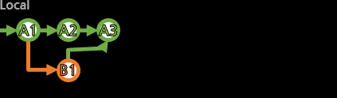
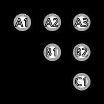
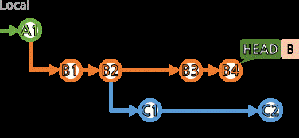

[merge]

주체 커밋에서 다른 커밋들(1개 이상. 여러 개도 동시에 가능)을 병합하는 커밋을 만든다.
병합할 커밋은 같은 브랜치든 아니든 상관없다.(어차피 개념상 커밋은 브랜치에 종속적이지 않다.)
[fetch,pull]의 pull은 fetch+merge의 동작이었다.
다른 브랜치의 커밋들을 병합할 때에는 충돌(conflict)이 일어날 상황이 많을 수 있으며, 역시 해결해야한다.
merge 명령어의 사용은 [fetch,pull]에서 일부 본 적이 있다.
크게 복잡하지 않다.
> git merge 병합할_커밋...
> git merge 병합할_브랜치...
현재 로컬 HEAD가 가리키고 있는 커밋을 주체로 하여, 상대방들을 병합해내는 커밋을 생성한다.
커밋이나 브랜치는 공백을 주면서 여러 개 지정할 수 있다.
(여러 개를 한 번에 merge하는 것을 문어발식(octopus merge)이라고 표현한다.)
병합 중 충돌(conflict)이 발생하면 수동으로 조절해야 하고, git add 후에
git merge --continue로 계속 진행하든가, 도중에 git merge --abort로 중단할 수 있는 것도
[fetch,pull]에서 봤었다.
merge는 브랜치와 커밋들의 현재 상황만 꿰고 있으면 무리 없이 진행할 수 있을 것이다.
여기서는 merge의 개념 부분을 짚고 넘어간다.
[브랜치 사용 전략]
팀에서 사용하고자 하는 전략이 있을테니 성실히 따르도록 하고,
아직 브랜치에 대한 개념이 희미하다면 조금이나마 보태고자 적어본다.
"여러 명이 한 리모트브랜치에서 작업하는 것은 좋지 않다."

위의 이미지에서 붉게 표시되는 부분은 자신의 로컬 커밋이다.
로컬 커밋의 작성 시점과는 다른 충돌이 발생하여,
매 사용자가 매 순간 이러한 처리를 해줘야할 수 있다.
매 순간 이렇다면 굉장히 귀찮을 것은 물론이고,
Git은 브랜치를 적극적으로 활용하도록 하는데
굳이 적은 브랜치에 몰려서 이러는건 옳지 않아보인다.
"하나의 브랜치에서 병합을 담당한다면??"

브랜치 A에서만 병합을 한다면 서로 얽힐 일은 없겠지만,
브랜치 B에서는 A의 변동 사항이 적용되지 않은 채 계속 작업이 이뤄지므로
병합 과정에서 반복되는 수정 작업이 일어날 수 있다.
"브랜치끼리 서로 병합을 해간다면??"

브랜치 A와 B 모두 서로 병합을 한다면 서로의 변동 사항을 항상 적용할 수는 있지만,
병합의 주체가 없고 항상 시간순으로만 판단해야 하고
임시 커밋이라도 다른 쪽에 바로 반영되거나 헷갈릴 수 있다.
"부모 브랜치는 병합만을, 자식 브랜치는 작업만을"

작업은 자식 브랜치에서만 이뤄지도록 하고,
부모 브랜치에서는 이를 병합한다.
형제자식 브랜치 끼리의 충돌도 발생할 수 있으니,
병합은 너무 늦지는 않게, 자주 해주면
서로가 같은 파일을 다르게 바꿨을 때 그 괴리가 커지지 않게 조율시킬 수 있다.
(이건 협업에서 오는 필연적인 문제이고, 병합이 그걸 해결하는 방법이니...)
병합한 후에는 다시 병합 커밋에서 새로운 자식 브랜치들로 작업하면 더 깔끔하다.
(병합에서 충돌들이 해결된 상태라서)
브랜치가 많아질 수는 있어도, 도표로 보면 개념이 어렵지 않다.
fast-forward 방식의 merge를 [fetch,pull]에서도 봤었다.
(분기가 갈릴 로컬 커밋이 없어서, 그냥 HEAD를 앞으로 빨리감기(fast-forward)하면 되는 상황)
브랜치끼리의 병합 상황에서도 fast-forward가 가능한 상황이 있다.
예를 들면, 자식 브랜치 하나에서만 작업이 이뤄졌고, 자식 브랜치 하나만 병합해도 되는 경우를 보자.
결과적으로 B1,B2,B3의 변화만이 적용되므로, 같은 방향으로 흐르기만 하면 된다.

([개념]에서 봤던, 커밋이 브랜치에 종속적이지 않다는 것을 상기하면 된다.)
B 브랜치 역시 A1 커밋을 포함하는 흐름이고,
B1,B2,B3 커밋 역시 B 브랜치 뿐만 아니라 다른 브랜치도 사용할 수 있다.
fast-forward가 가능한 경우, git merge는 기본적으로 fast-forward 우선하도록 동작한다.
만약 이렇게 동작하지 않도록 의도적으로 자체적인 병합 커밋을 만들도록 하고 싶다면,
git merge --no-ff 커밋들...로 --no-ff옵션을 주면 된다.
한 커밋(B3)을 여러 브랜치가 가리키는 상황은 피할 수 있겠지만, A 브랜치에서 git log를 보면 이렇다.
최종적으로 가리키지만 않았을 뿐, 여전히 A 브랜치는 B1,B2,B3를 기록에 포함하고 있다.
(A2 커밋은 거저 생겨난게 아니다.
매번 알록달록하게 표현하긴 힘드니, 생략된 흐름도만 봐도 공통부분을 알 수 있어야 한다.)
위의 그림에서 A2 커밋을 두지 않더라도(fast-forward 했더라도), 흐름만 제대로 파악할 수 있으면 된다.
위의 두 그림은 완전히 같은 상황을 다르게 그려본 것이다.
equal(=) 표시나 알록달록한 부분이 없어도, 브랜치의 log를 보고 파악할 수 있으면 된다.
팀의 방침에 따라, 항상 자체적인 병합 커밋을 두도록 하여 가시적으로 좀 더 명확한 구분을 하든... 그것은 각자의 선택이다.
Git은 가능하게 할 뿐, 선택은 사용자의 몫이다. '반드시 이래야한다'는 없다고 생각한다.
마지막으로, 정말 아무나 병합이 되나??이다.(같은 저장소 내에서)
개념적으로 생각하면 당연히 그렇다.
(모든 브랜치들은 공통적인 시초 부분이 있을 것이니)
물론 멀 수록 충돌(conflict)은 커질 것이다.
이걸 조절해서 완료시키면 된 것이고, 조절 안되면 할 수 없고...

D 브랜치의 최신(D2)가 아닌, D1을 주체로 하려면??
D1에서 브랜치를 따면 된다.
D 브랜치에게는 부모가 아닌 삼촌뻘인 B 브랜치도 병합이 가능한가??
어차피 어딘가엔 공통 조상이 있다. 충돌(conflict)이 많냐 적냐의 얘기고, 감당해내면 그만.
병합 상대방도 브랜치가 아니라 커밋이어도 되는가??
가능하다.
결국 충돌(conflict)만 해결하면 누구든 가능하다.
git merge는 공통 조상까지의 흐름 전체를 복제하여 새로운 병합 커밋을 생성하는 작업이다.
git cherry-pick으로 특정 커밋들만을 복제하여 새로운 병합 커밋을 생성할 수도 있다.

이것 역시도 충돌(conflict)은 존재할 수 있고, 조율해야 한다.
이제는 기존 커밋들을 수정할 수 있는 작업들을 이제 천천히 알아보자.
우선 브랜치를 과거로 되돌리는 작업을 보자.
